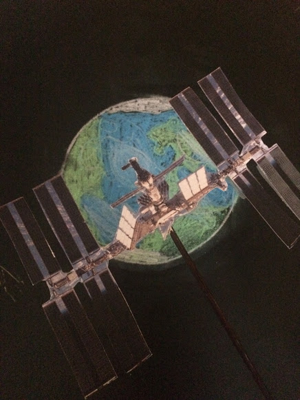
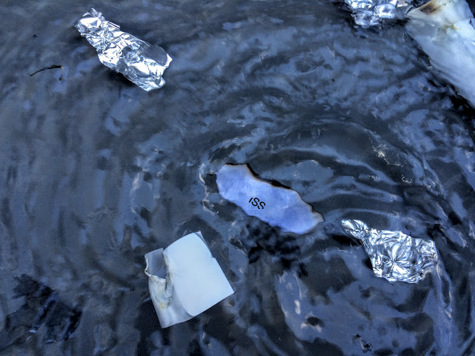
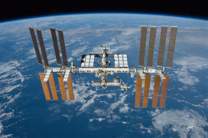

Plans to build the ISS started in 1993 and completed in 2010. It is 250 miles above the earth and travels at 17,500 miles an hour. Thats fast enough to orbit the earth in around 90 minutes. So far the ISS has traveled over 1.5 billion miles. Thats about the distance from earth to Uranus.
The ISS is the most expensive man made object ever costing over $160 billion. The cost of the ISS is shared between 15 different countries in the world, that's why it's called "The International space station". It's good for countries to able to cooperate together on the ISS even if they have differences on earth.
You might think getting to the ISS is a case of getting in a rocket and fly directly up until you reach the ISS but it is way more complicated than that. To get to the ISS you would need to take a Russian spacecraft known as the Soyuz

Once a crew gets to the ISS they will spend anywhere from 2 months to a year on a mission on the ISS. In March of this year (2015) Scott Kelly from the USA and Mikhail Korniyenko from Russia will spend one year on the ISS that's the longest time any human will ever have spent in space. By spending long in space scientists hope to understand the effects of space on humans for future missions to Mars and beyond. In space humans lose muscle mass and bone density because of the lack of gravity. So the crew have to exercise They have equipment like exercise bikes and special weight machines that use compressed air instead of heavy weight. The crew could also have to carry out repairs both inside and outside the ISS which would involve they doing space walks. As the ISS is the earth's only microgravity laboratory it is very important so the crew will spend their working days doing experiments studying the effects of space on different things from earth's climate, life in space and the effects of space on diseases.
The ISS is made of sections that have been joined together. The first section of the ISS was opened was the Russian FBG node in 1998. Since many other parts have been added, including the ESA (European Space Agency) ,the US and the japanese labs and my favourite part the Cupola. The Cupola is an Italian made module. Its sits on the earth facing side of the ISS and has seven windows. Most of photographs of the earth taken from the ISS will have been taken from the Cupola.
The ISS is powered by large solar panels which convert the sun rays into energy. Special Food is prepared on earth and brought up to the ISS in resupply runs. Apart from the food crew members are also sent up some of their favourite treats. As it is the ISS and their can be crew members from all over the world it means that there choice of different food from different countries. Water is heavy and expensive to transport not only for the ISS but if humans were to go to mars. So water is recycled and used again and again. Even urine from the crew members is turned back into water and used again. All the rubbish that builds up while the crew live on the ISS isn't simply dumped out into space. If it was it would just float around the ISS and that wouldn’t be very pleasant for space walks or could damage equipment. Instead the rubbish is compacted and packed around docked part the soyuz that's inside the ISS. Then when the crew members go home this rubbish is burned off on reentry.
National Aeronautics and Space Administration (NASA) has said the ISS will be operational until at least 2024. By then the technology will be old and some parts might not work as they are supposed to. The improved technology would mean a way to build a bigger better space station. When the times come the ISS will be de-orbited or crashed into the sea. For now it when it is above where you live at night can been seen on a clear flying fast across the sky.

Images of the ISS in Orbit and the Soyuz
